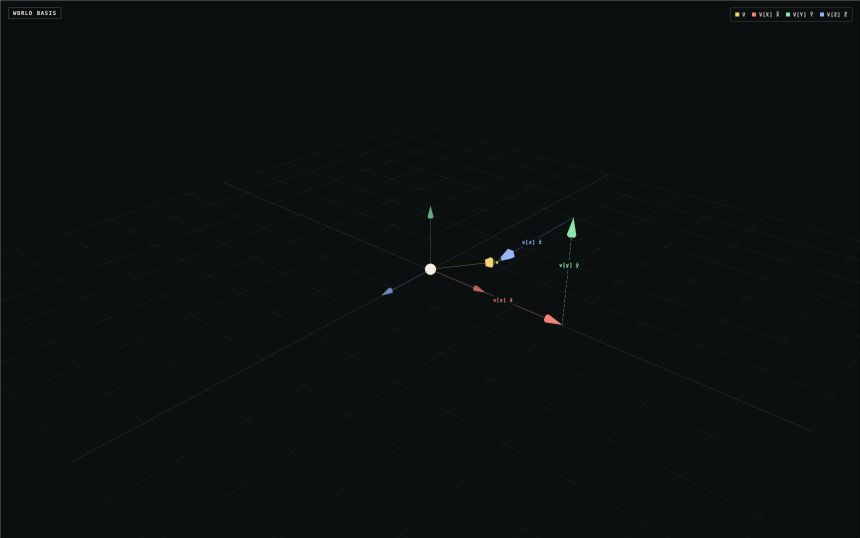
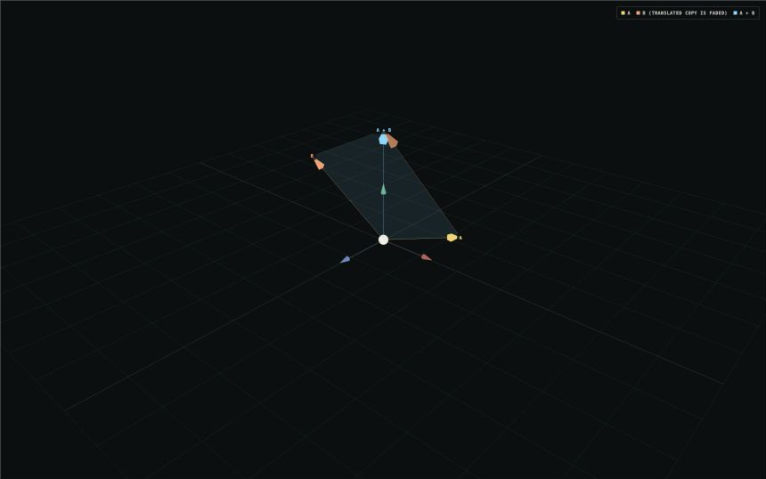
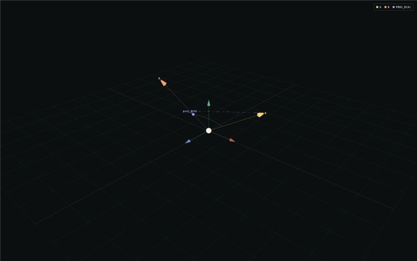

(insert ../../shared/header.md.html here)
**Vectors and Coordinate Systems**
A vector describes a direction and a magnitude. The familiar tuple `(x, y, z)` is not the vector itself—it is the vector measured against a particular set of basis directions. These three visualizers build from that definition to two of the most common vector operations in graphics.
**1. Building a vector from a basis**
If the basis directions are **x̂**, **ŷ**, and **ẑ**, a vector is the sum of three scaled basis vectors:
`v = v[x] x̂ + v[y] ŷ + v[z] ẑ`
The red, green, and blue arrows place those three pieces head-to-tail. Together they arrive at the same endpoint as the yellow vector. Change any coefficient to rebuild the vector along that basis direction.

**2. Vector addition**
Vector addition combines displacements component by component:
`A + B = (A[x] + B[x], A[y] + B[y], A[z] + B[z])`
The faded copy of **B** starts at the tip of **A**, making the head-to-tail construction explicit. The cyan result reaches the same point directly from the origin. The parallelogram also shows why changing the order to **B + A** reaches the same endpoint.

**3. Dot product**
The dot product measures alignment:
`A · B = |A||B| cos(angle)`
A positive result means the vectors point generally together, zero means they are perpendicular, and a negative result means they point generally apart. The purple arrow is the projection of **A** onto **B**; the dashed segment is the part of **A** perpendicular to **B**.

Try making the dot product zero. Then make **A** a positive or negative scalar multiple of **B** and compare the angle and projection. Cross products and more vector operations will build on these foundations later.